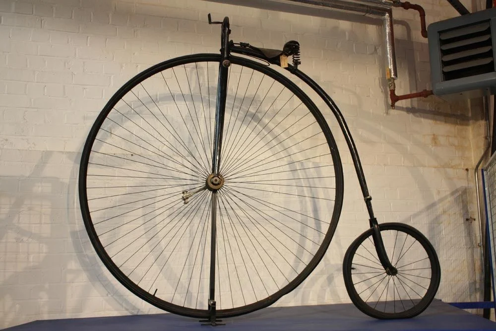
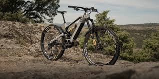
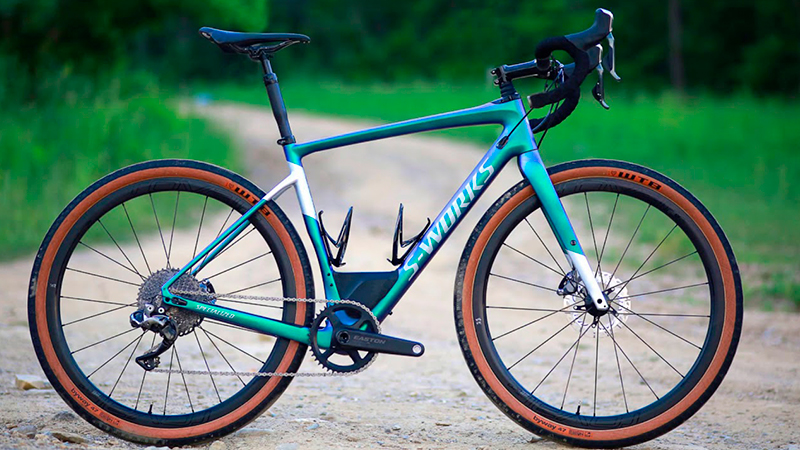
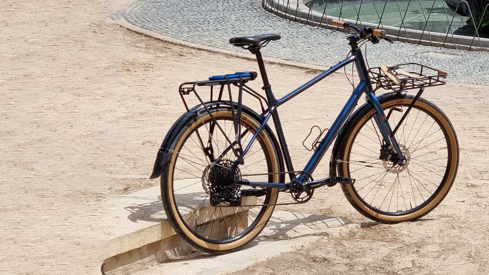
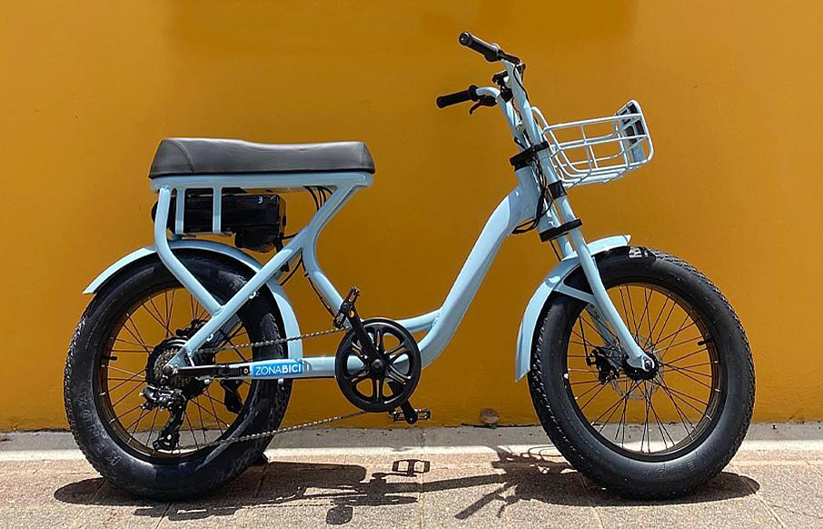
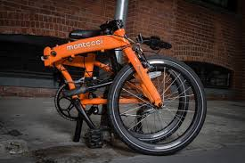

Historia de la Bicicleta
La bicicleta tiene sus orígenes a comienzos del siglo XIX. Uno de los primeros modelos
conocidos fue la draisiana, creada en 1817 por Karl Drais, la cual no tenía pedales y
se impulsaba con los pies. Con el paso del tiempo, la bicicleta fue evolucionando,
incorporando pedales, cadenas, engranajes y materiales más ligeros y resistentes.
Durante el siglo XX, la bicicleta se popularizó como medio de transporte urbano y como
herramienta deportiva. En la actualidad, es reconocida como una solución sostenible
frente a los problemas de tráfico, contaminación ambiental y sedentarismo. Además, ha
dado lugar a nuevas modalidades como la bicicleta eléctrica.

Para conocer mas sobre la historia de la bicicleta visita el siguiente articulo.
Modelos de Bicicletas
Existen muchos tipos de bicicletas, cada una diseñada para una necesidad específica.
Algunos de los modelos más utilizados son:
-
Bicicleta de montaña (MTB): diseñada para terrenos irregulares, caminos de tierra y senderos.

-
Bicicleta de carretera: ideal para velocidad y largas distancias sobre asfalto.

-
Bicicleta urbana: cómoda y práctica para desplazamientos diarios en la ciudad.

-
Bicicleta eléctrica: incluye un motor que ayuda al pedaleo.

-
Bicicleta plegable: compacta, fácil de guardar y transportar.

🗺️ Lugares para Montar Bicicleta
Montar bicicleta es una actividad que se puede disfrutar en muchos entornos diferentes.
Algunos de los lugares más recomendados son:
- Parques urbanos con ciclovías señalizadas
- Senderos de montaña y caminos rurales
- Rutas costeras y turísticas
- Áreas naturales protegidas
- Pistas o circuitos especializados para ciclismo
Montar bicicleta en estos lugares ayuda a mejorar la condición física, reducir el estrés y
disfrutar del entorno natural.
Para disfrutar plenamente de la bicicleta en todos los lugares te recomiendo leer el siguiente archivo: Guía del ciclistaVer archivo | Descargar
Recursos y Enlaces Útiles
A continuación se presentan algunos recursos interesantes para aprender más sobre
ciclismo, mantenimiento de bicicletas y comunidades ciclistas:
-
Revista especializada en ciclismo:
https://www.ciclismoafondo.es -
Enciclopedia de bicicletas y componentes:
https://www.bikepedia.com -
Comunidad y noticias del ciclismo:
https://www.bicycling.com -
Guía del ciclista:
Ver archivo | Descargar